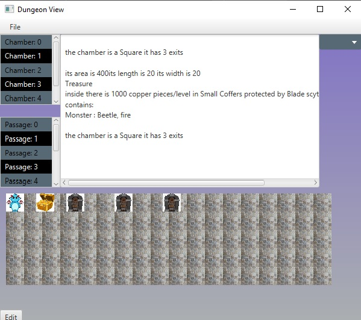
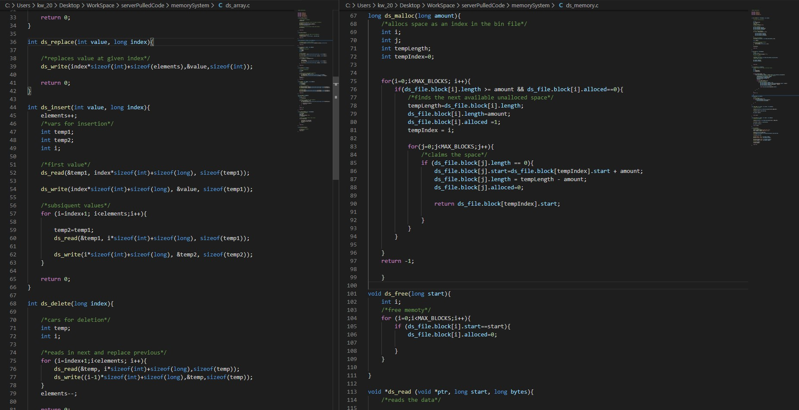
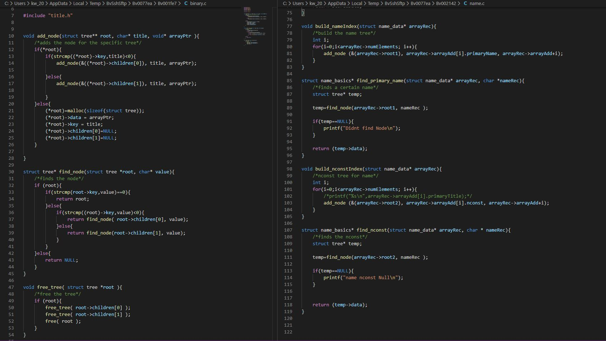
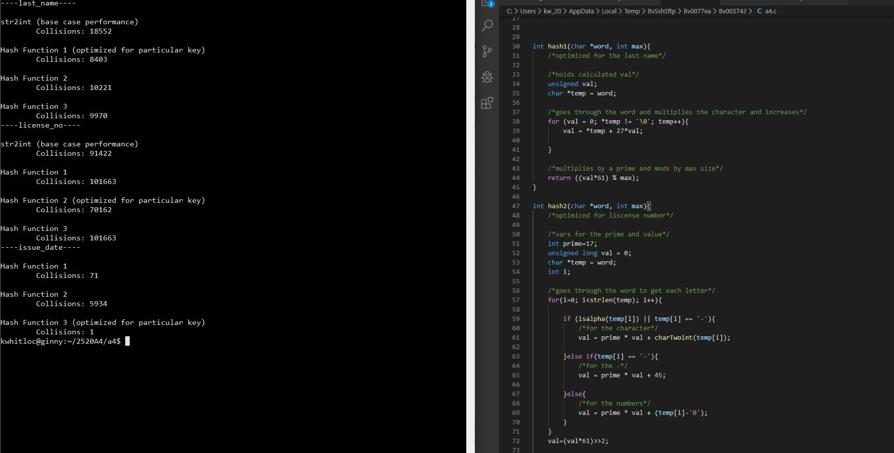

During the hackathon ConUHacks with a team of two others we developed a website that allowed the user to book and organize all there appoinments with various health care practioners. It would send you a text message of upcoming appoinments. We used HTML, CSS, NodeJS, and MongoDB to develop it. View
In my Object Oriented class we created four assignments that built off each other. The first one was general logic to randomly create Dungeon and Dragon rooms, the second was to create an entire level by putting the rooms together, the third was to refactor and write Junit tests, and the fourth was to put it all toegther and create a graphical interface. I untilized OO concepts to create well designed classes and methods. I used JavaFX to create the interface.
 Download Source CodeIn my Data Structures class for one of the assignments I created a memory mangement system using bin files in C. The file system functioned similarly to the Malloc function however it was all handled manually. Using the file system I implemented linked-list and array implementations where the efficiency of different operations were measured and analysed on the different data structures.
 Download Source CodeIn my Data Structures class for one of the assignments I created parser for the Internet Movie Database that would read in all of the data and seperate it into three seperate Binary Trees using C. Using the trees you could enter a movie title and it would tell you the actors and the characters they played in it. You could also enter an actor and it would tell you the movies they have been in and the character they played. Utilizing Binary Trees allowed for almost imediate searching in very large files.
 Download Source CodeIn my Data Structures class for one of the assignments I created three hash functions to minimize colisions in C. Using the Delware Data Set of licsenced professionals. Last name, issue data, and liscense number were the three keys used in the hashing.
 Download Source Code